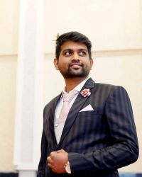

|  |
Syed Nawaaz Muhammed Hussaini
Sales Manager at OPPO
I am a Sales Manager at OPPO, Mysore . I love Travelling and Exploring New Places. |
Profile Summary
Highly entrepreneurial sales professional with 1.8 years of experience in fueling organization growth and delivering undeniable results for the company.
- Delivered 3X growth through opening new WOD stores.
- Negotiated and structured business deals that created an enduring partnership.
- Skilled to analyze and interpret unique problems and find the right solutions gathered through training experiences and logical thinking.
Education
| Duration |
Institution |
| 2011-2014 |
B.COM ,Mysore University |
| 2014-2016 |
M.B.A [Marketing], Mysore University |
| 2013-2016 |
High School in St.Anne's |
Work Experience
- Leading 40 sales representative to achieve their objectives - guided them towards achiving sales target and established effective/schedule sales reports.
- Route training the OSR's about the product knowledge and the company culture.
- Had task to increase the productivity by delivering proper training and effective demonstration about the product.
- Building relationship with dealers and vendors to improve and develop business relationship.
- Conducting online meeting and training , providing OSR defensive pitch to compete with competitive models and market.
- Dividing monthly , weekly , and daily targets for Sales representatives.
- Provide market feedback to the company leadership regarding competitive offerings.
SUMMER INTERNSHIP PROJECT:
FIAT, Mysore, In the area of Consumer behaviour, Marketing, "A Study on Factors Influencing Consumer behaviour towards FIAT cars" The objective of the Internship was to study the internal factors that affect the Consumer behaviour to buy a fiat car.
ACHIEVEMENTS
- Best individual outstanding performance March (2017)
- Awarded as best Management Executive for Mysore region September (2017)
- Was awarded as Certified ME among 65 Management Executive held at Hubli Dec (2017)
- Completed the training & passed the assessment for trainers training camp (2018)
Skills
| Creativity |
| Critical Thinking |
| Accounting |
| Empathy |
| Customer Service |
| Decision Making |
| Management |
| Adaptability |
My Hobbies
Contact Details